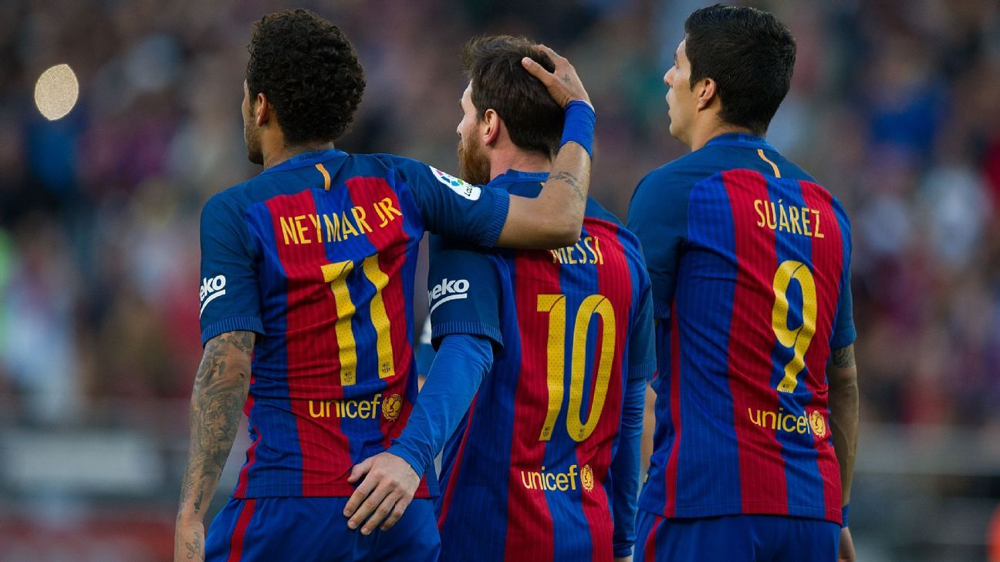

Futbol Club Barcelona (pronúncia catalã: /fubˈbɔɫ ˈkɫub bərsəˈɫonə/ (escutar?·info)), mais conhecido como Barcelona e coloquialmente como Barça, é um clube de futebol profissional, com sede em Barcelona, na Catalunha, uma comunidade autônoma da Espanha. Há muito tempo, o clube é considerado por alguns como um dos maiores e mais vitoriosos clubes do mundo.
Fundado em 1899 por um grupo de futebolistas suíços, ingleses e catalães. O clube se tornou um símbolo da cultura catalã e do nacionalismo catalão. Ao contrário das principais equipes de futebol, os próprios torcedores é que operam o funcionamento do clube, motivo pelo qual utiliza o lema "Més que un club" (Mais que um clube).[4] O Barcelona é o segundo clube de futebol mais valioso do mundo, com seu valor estimado em $3.2 bilhões, e o clube de futebol mais rico em termos de receita, com um volume de negócios anual de 836,4 milhões de reais.
Nacionalmente, o Barcelona conquistou 27 vezes a La Liga, 31 Copa del Rey, 14 Supercopa da Espanha, três Copa Eva Duarte e duas vezes a Copa da Liga Espanhola, sendo o detentor do maior número de troféus nas quatro últimas competições citadas. No que diz respeito ao futebol internacional, o clube sagrou-se vencedor da Liga dos Campeões da UEFA cinco vezes, e cinco triunfos da Supercopa da UEFA e quatro a Taça dos Clubes Vencedores de Taças, três a Taça das Cidades com Feiras, e por último três a Copa do Mundo de Clubes da FIFA. O Barcelona esteve na primeira posição do ranking mundial de clubes da IFFHS em 1997, 2009, 2011, 2012 e 2015, e atualmente ocupa a segunda posição no ranking de clubes da UEFA. A principal rivalidade do time é com o Real Madrid, onde as partidas entre as duas equipes são chamada de El Clásico. Vale ressaltar, que o Barcelona é mundialmente reconhecido por "humilhar" o rival Real madrid por seus grandes triunfos, tanto nos primeiros anos[5][6], e tanto nos recentes encontros[7][8].
Os 10 maiores craques que pasaram pelo time:
10-Pep Guardiola
9- Johan Cruyff 8- Carles Puyol7- Ronald Koeman
6- Suárez Miramontes
5- Stoichkov
4- Gaucho
3- Iniesta
2- Hernandez
1- Messi
